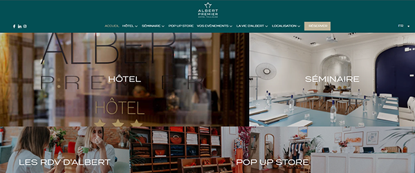
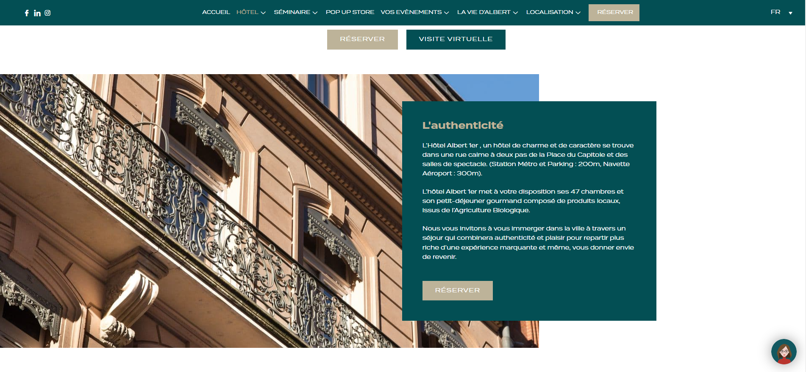
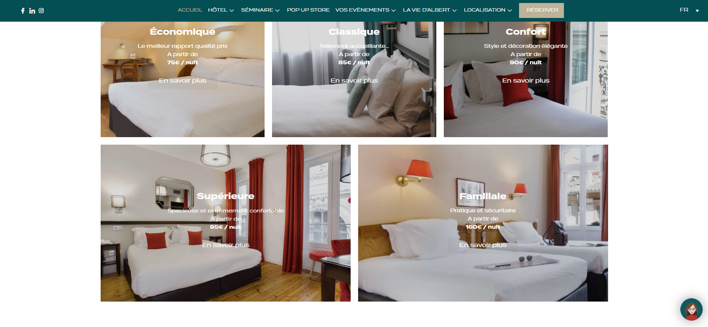

Vue rapide
Un projet complet pour montrer ma polyvalence, du dialogue client jusqu'a l'integration.
Cette refonte m'a place dans une posture tres concrete de designer web : comprendre les attentes d'un client hotelier, cadrer les arbitrages avec l'agence Yurcom, reorganiser une navigation riche et produire une interface plus claire, plus accueillante et plus actionnable. Le projet montre aussi ma capacite a enchainer ateliers UX/UI, design d'interface, creation d'elements visuels, retouches photos et integration WordPress / Elementor.
Ce que le projet raconte
Ma capacite a passer du besoin client au design, puis du design a une mise en ligne exploitable.
Point fort
Comprendre une arborescence dense et la simplifier sans perdre les contenus strategiques de l'hotel.
Contexte
Projet mene en alternance chez Yurcom, avec rencontres directes et ateliers avec les dirigeants.
Brief
Refondre l'interface sans perdre l'ame du lieu
Le projet a ete realise avec l'agence Yurcom pour accompagner la refonte du site de l'Hotel Albert 1er a Toulouse. La demande client etait double : remettre a niveau l'experience graphique du site et repenser la navigation pour mieux guider les visiteurs entre les differents univers du lieu.
J'ai travaille directement avec les dirigeants de l'hotel dans le cadre d'ateliers UX/UI et de points de validation partages avec l'agence. Ce contact direct a ete important pour capter les vrais enjeux : valoriser le caractere de l'etablissement, clarifier l'offre et rendre la reservation plus naturelle dans le parcours.
01 · Contexte
Un site riche, avec plusieurs portes d'entree
Hotel, seminaires, evenements, pop-up store, pages de chambres, reservation : l'enjeu n'etait pas seulement esthetique. Il fallait redonner une logique de lecture a une offre dense.
02 · Attente client
Monter en gamme sans complexifier
Le client voulait un rendu plus qualitatif, plus actuel et mieux structure. Le travail a donc porte sur la hierarchie des contenus et la visibilite des points de conversion.
03 · Ma mission
Designer et produire
UX design, UI design, web design, integration WordPress / Elementor, creation d'elements visuels sur Illustrator et retouches photo sur Photoshop.
Enjeux UX
Comprendre les attentes, les contraintes et les parcours qui comptent vraiment
Sur un site hotelier, tout n'a pas la meme valeur. Certains visiteurs cherchent une chambre, d'autres une salle de seminaire, d'autres encore veulent simplement se projeter dans l'ambiance du lieu. Le travail UX a consiste a reduire la friction entre cette richesse d'offre et les intentions concretes des utilisateurs.
Reorganisation de la navigation
Le site devait rester complet tout en devenant plus lisible. L'enjeu etait de hierarchiser les acces, d'ordonner les priorites et d'eviter que la navigation ne disperse l'utilisateur trop tot.
Parcours de reservation plus direct
Les points de conversion devaient etre visibles sans dominer toute l'experience. Le site devait inspirer confiance et mener vers la reservation avec plus de clarte.
Experience premium mais simple
L'identite devait monter en gamme sans devenir demonstrative. Le bon equilibre se jouait entre elegance, respiration des contenus et simplicite d'usage sur desktop comme sur mobile.
Faire le lien entre design et exploitation
Le projet ne s'arretait pas aux maquettes. Il fallait penser un systeme integrable dans WordPress / Elementor, robuste pour la suite et coherent avec les attentes du client et de l'agence.
Process
Ateliers, cadrage, conception et production
Le coeur du projet, c'etait aussi la relation. Rencontrer les patrons directement m'a permis de travailler au plus proche des arbitrages reels : ce qui devait etre raconte, ce qui devait etre priorise et la maniere dont le site devait soutenir l'image de l'hotel tout en restant pragmatique pour l'agence et la mise en ligne.
01
Ateliers UX/UI avec les dirigeants
Echanges directs pour comprendre les attentes, les irritants du site existant, les priorites business et la perception souhaitee pour l'etablissement.
02
Reorganisation des contenus et de la navigation
Travail de tri, de regroupement et de priorisation pour rendre la structure plus intuitive sans aplatir la richesse du site.
03
Conception des maquettes web
Production des ecrans dans Adobe XD / Figma, avec un travail particulier sur les respirations, les blocs editoriaux, la lisibilite de l'offre et la visibilite des CTA.
04
Creation des assets et retouches
Preparation d'elements visuels sur Illustrator, harmonisation des images, retouches photo sur Photoshop et adaptation des contenus.
05
Integration WordPress / Elementor
Passage du design a une realite exploitable : integration des pages, mise en forme responsive et coherence entre intention de maquette et production web.
Direction UI
Une refonte plus claire, plus premium et plus orientee usage
Les maquettes ont cherche un equilibre entre chaleur, lisibilite et qualite percue. L'interface devait rester simple a lire tout en donnant davantage de tenue a la marque : plus de hierarchie, des blocs editoriaux mieux cadences et une mise en scene plus nette des categories de chambres.
Les visuels restent ici au service du propos : ils montrent la clarification de la home, une presentation plus directe des chambres et une navigation globale mieux structuree, sans prendre le dessus sur la lecture de la case study.



Mise en ligne
Du design a une version exploitable et produite
Ce projet est interessant parce qu'il ne s'arrete pas au role de designer pur. Il montre une chaine complete : comprendre le besoin, maquetter, produire les elements graphiques, puis integrer dans WordPress / Elementor pour livrer un site concret, exploitable et coherent avec les attentes du client comme de l'agence.
Un travail transversal
Le projet melange UX design, UI design, web design, integration, retouches photo et creation d'elements visuels. C'est exactement le type de mission qui montre ma capacite a tenir une vision tout en passant a l'execution.
Un dialogue agence / client / production
Le fait d'etre en alternance chez Yurcom m'a place au croisement de plusieurs attentes. Il fallait servir l'exigence de l'agence, entendre les besoins du client et garder une mise en oeuvre realiste dans l'outil de production.
Resultat
Une case study qui montre de la polyvalence autant que du sens UX
Sur ce projet, ce qui est fort, c'est la combinaison de plusieurs niveaux de travail : comprehension des attentes, reformulation des besoins, structuration d'un site complexe, direction UI, production visuelle et integration. C'est une mission qui parle autant de relation client que de design d'interface.
2021
Debut du projet au sein de Yurcom
UX/UI
Ateliers, refonte graphique et reorganisation de navigation
WP
Integration WordPress / Elementor et passage en production